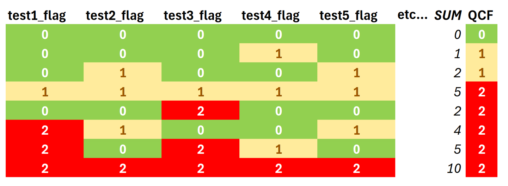

QCF: overall quality control flag#
Note
The QCF (Quality Control Flag) is calculated from multiple flags from single tests.
QCFis a flag that shows the overall quality of the respective data point.QCFcan be:0=best data,1=OK data,2=bad dataQCFis calculated from single test flags summed together:For records where the sum > 2:
QCF=2For records where the sum = 2 from a single flag with value 2:
QCF=2For records where the sum = 2 and no single flag is 2 (i.e., the sum comes from two single flags with value 1):
QCF=1For records where the sum = 1 (i.e., only on single flag with value 1):
QCF=1For records where the sum = 0 (i.e., all single flags are zero):
QCF=0 (best quality fluxes)
Flags for single tests are created in Level-2, Level-3.2 and Level-3.3.
Genereally, single tests can be:
Hard flags: Some tests yield either 0 or 2, but have no flag=1. This is the case if the test is so crucial that if the test fails, data are considered bad. If one test flag=2, then the
QCFis automatically 2, no matter the other tests. Flags from such tests are also called hard flags.Soft flags: If a test results is flag=1, it can still be OK data for some analyses. Even if there is a second test with flag=1, data might still be OK. If one or two flags are 1, and there is no flag=2, then the
QCFis also 1. These flags are less crucial and are therefore soft flags.
QCFalways uses the same logic, for both flux and meteo data, only the single tests are different.This was done for all fluxes, however, for NEE the requirements were stricter during the nighttime than during the daytime. For NEE, daytime
QCFflags of 0 and 1 were accepted (flag 2 = bad data), but during nighttime onlyQCFflags with 0 were retained (flags 1 and 2 = bad data). For all other fluxes,QCFflags of 0 and 1 were accepted during daytime and nighttime (flag 2 = bad data).Example:
FLAG_L3.3_CUT_50_NEE_L3.1_QCFis the flag after Level-3.3, for fluxNEE_L3.1(storage-corrected) for the USTAR scenarioCUT_50. This flag is applied to fluxNEE_L3.1, producing the quality-filtered fluxNEE_L3.1_L3.3_CUT_50_QCF. In addition, another flux variable is produced, containing only highest-quality fluxes:NEE_L3.1_L3.3_CUT_50_QCF0(all single flags are zero).

Fig. 3 Example showing how the overall quality control flag QCF is calculated from single test flags.#